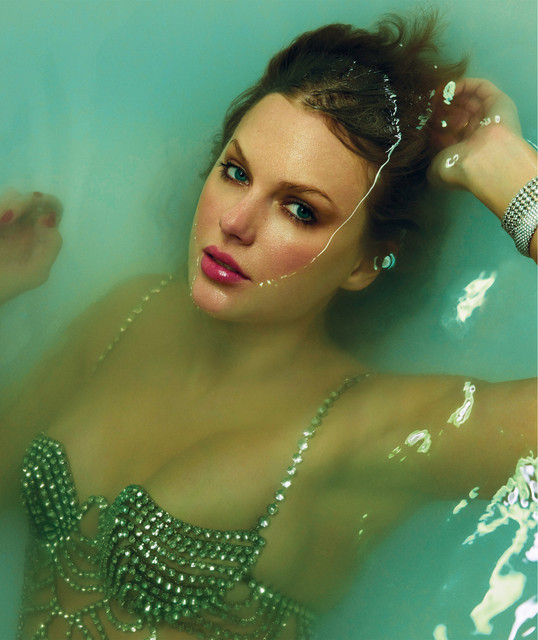
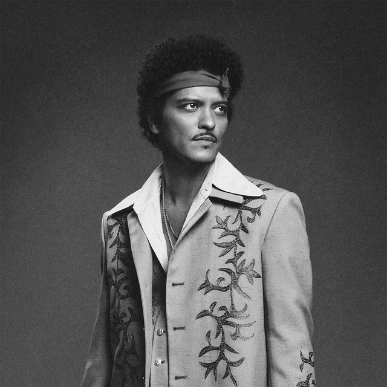

Imagens dos principais cantores populares em 2026
Taylor Swift

Taylor Swift é uma das cantoras mais influentes da música pop, conhecida por suas letras pessoais e narrativas. Em 2026, ela continua a dominar as paradas com álbuns inovadores e turnês recordes. Com mais de 10 Grammys, ela é uma força na indústria musical.
Justin Bieber
Justin Bieber, o "príncipe do pop", evoluiu de ídolo teen para um artista maduro. Em 2026, ele lança hits que misturam pop e R&B, com milhões de streams e uma base de fãs global. Sua influência nas redes sociais é imensa.
Bad Bunny

Bad Bunny revolucionou o reggaeton e a música latina. Em 2026, ele continua a quebrar barreiras culturais, colaborando com artistas internacionais e defendendo causas sociais. Seu impacto na música global é inegável.
Bruno Mars

Bruno Mars é conhecido por sua energia no palco e hits como "Uptown Funk". Em 2026, ele encanta com performances ao vivo e colaborações. Com Grammys e shows sold-out, ele é um dos maiores showmen da música.
The Weeknd

The Weeknd, com sua voz distinta e temas sombrios, conquistou o mundo do R&B. Em 2026, ele continua a lançar músicas que definem tendências, com performances icônicas como no Super Bowl. Sua carreira é marcada por inovação e sucesso comercial.
Volte para a página anterior
Voltar